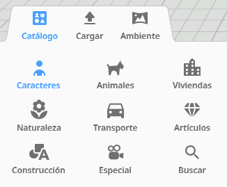

Para empezar a dar forma a tu escenario, debes fijarte en las pestañas de la parte inferior izquierda de la pantalla. Aquí encontrarás tres opciones principales: Catálogo, Cargar (para archivos externos) y Ambiente (para cambiar el cielo o el fondo).

Dentro de la pestaña Catálogo, tienes a tu disposición una gran variedad de categorías temáticas con objetos listos para arrastrar y soltar en tu escenario:
- 👥 Caracteres (Personajes): Aquí encontrarás personas de todo tipo (históricos, futuristas, profesiones, etc.). Son los elementos clave para interactuar y programar diálogos o acciones.
- 🐕 Animales: Una colección de seres vivos terrestres, acuáticos y voladores para ambientar entornos naturales.
- 🏠 Viviendas: Casas, muebles y decoraciones de interior prefabricadas para amueblar tus espacios de forma rápida.
- 🌸 Naturaleza: Árboles, plantas, rocas, flores y elementos climáticos para diseñar exteriores y paisajes realistas.
- 🚗 Transporte: Coches, bicicletas, barcos, aviones y todo tipo de vehículos para dar movimiento a tus escenarios urbanos.
- 💎 Artículos (Objetos): Pequeños elementos cotidianos, herramientas, comida o cofres para que tus personajes interactúen con ellos o decoren las estancias.
- 📐 Construcción: ¡La base de la arquitectura! Bloques geométricos, paredes, puertas, ventanas y tejados que podrás combinar libremente para crear tus propios edificios desde cero.
- 🎥 Especial: Contiene elementos técnicos avanzados como la cámara interactiva o luces específicas para iluminar escenas oscuras.
- 🔍 Buscar: Si sabes exactamente lo que necesitas, escribe una palabra clave aquí para encontrar el objeto directamente sin navegar por las categorías.